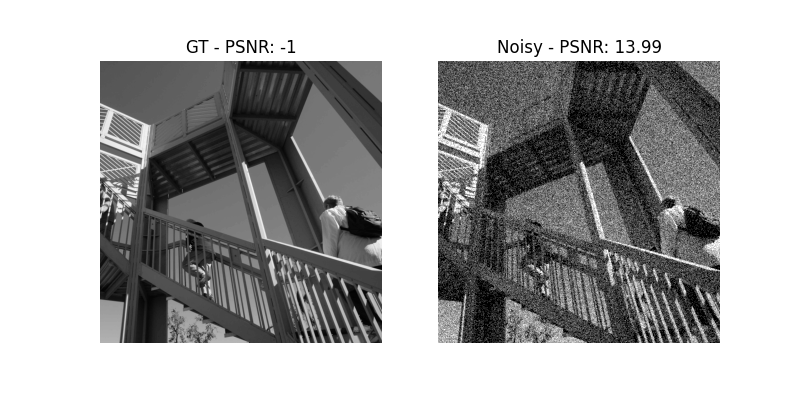

<!DOCTYPE html>
<html class="writer-html5" lang="en" >
<head>
  <meta charset="utf-8">
  
  <meta name="viewport" content="width=device-width, initial-scale=1.0">
  
  <title>01. Smoothing &mdash; recon 0.0.1 documentation</title>
  

  
  <link rel="stylesheet" href="../_static/css/theme.css" type="text/css" />
  <link rel="stylesheet" href="../_static/pygments.css" type="text/css" />
  <link rel="stylesheet" href="../_static/gallery.css" type="text/css" />
  <link rel="stylesheet" href="../_static/gallery-binder.css" type="text/css" />
  <link rel="stylesheet" href="../_static/gallery-dataframe.css" type="text/css" />

  
  
  
  

  
  <!--[if lt IE 9]>
    <script src="../_static/js/html5shiv.min.js"></script>
  <![endif]-->
  
    
      <script type="text/javascript" id="documentation_options" data-url_root="../" src="../_static/documentation_options.js"></script>
        <script src="../_static/jquery.js"></script>
        <script src="../_static/underscore.js"></script>
        <script src="../_static/doctools.js"></script>
        <script src="../_static/language_data.js"></script>
    
    <script type="text/javascript" src="../_static/js/theme.js"></script>

    
    <link rel="index" title="Index" href="../genindex.html" />
    <link rel="search" title="Search" href="../search.html" />
    <link rel="next" title="03. Segmentation" href="2d_tv_segmentation.html" />
    <link rel="prev" title="Tutorials" href="index.html" /> 
</head>

<body class="wy-body-for-nav">

   
  <div class="wy-grid-for-nav">
    
    <nav data-toggle="wy-nav-shift" class="wy-nav-side">
      <div class="wy-side-scroll">
        <div class="wy-side-nav-search" >
          

          
            <a href="../index.html" class="icon icon-home" alt="Documentation Home"> recon
          

          
          </a>

          
            
            
              <div class="version">
                0.0.1
              </div>
            
          

          
<div role="search">
  <form id="rtd-search-form" class="wy-form" action="../search.html" method="get">
    <input type="text" name="q" placeholder="Search docs" />
    <input type="hidden" name="check_keywords" value="yes" />
    <input type="hidden" name="area" value="default" />
  </form>
</div>

          
        </div>

        
        <div class="wy-menu wy-menu-vertical" data-spy="affix" role="navigation" aria-label="main navigation">
          
            
            
              
            
            
              <p class="caption"><span class="caption-text">Getting started:</span></p>
<ul class="current">
<li class="toctree-l1 current"><a class="reference internal" href="index.html">Tutorials</a><ul class="current">
<li class="toctree-l2 current"><a class="current reference internal" href="#">01. Smoothing</a></li>
<li class="toctree-l2"><a class="reference internal" href="2d_tv_segmentation.html">03. Segmentation</a></li>
</ul>
</li>
</ul>

            
          
        </div>
        
      </div>
    </nav>

    <section data-toggle="wy-nav-shift" class="wy-nav-content-wrap">

      
      <nav class="wy-nav-top" aria-label="top navigation">
        
          <i data-toggle="wy-nav-top" class="fa fa-bars"></i>
          <a href="../index.html">recon</a>
        
      </nav>


      <div class="wy-nav-content">
        
        <div class="rst-content">
        
          


<div role="navigation" aria-label="breadcrumbs navigation">

  <ul class="wy-breadcrumbs">
    
      <li><a href="../index.html" class="icon icon-home"></a> &raquo;</li>
        
          <li><a href="index.html">Tutorials</a> &raquo;</li>
        
      <li>01. Smoothing</li>
    
    
      <li class="wy-breadcrumbs-aside">
        
            
            <a href="../_sources/tutorials/2d_image_smoothing.rst.txt" rel="nofollow"> View page source</a>
          
        
      </li>
    
  </ul>

  
  <hr/>
</div>
          <div role="main" class="document" itemscope="itemscope" itemtype="http://schema.org/Article">
           <div itemprop="articleBody">
            
  <div class="sphx-glr-download-link-note admonition note">
<p class="admonition-title">Note</p>
<p>Click <a class="reference internal" href="#sphx-glr-download-tutorials-2d-image-smoothing-py"><span class="std std-ref">here</span></a>     to download the full example code</p>
</div>
<div class="sphx-glr-example-title section" id="smoothing">
<span id="sphx-glr-tutorials-2d-image-smoothing-py"></span><h1>01. Smoothing<a class="headerlink" href="#smoothing" title="Permalink to this headline">¶</a></h1>
<p>This example …</p>
<p>We import ….</p>
<div class="highlight-default notranslate"><div class="highlight"><pre><span></span><span class="kn">import</span> <span class="nn">matplotlib.pyplot</span> <span class="k">as</span> <span class="nn">plt</span>
<span class="kn">import</span> <span class="nn">numpy</span> <span class="k">as</span> <span class="nn">np</span>
<span class="kn">from</span> <span class="nn">scipy</span> <span class="kn">import</span> <span class="n">misc</span>

<span class="kn">from</span> <span class="nn">recon.interfaces</span> <span class="kn">import</span> <span class="n">Smoothing</span>

<span class="n">img</span> <span class="o">=</span> <span class="n">misc</span><span class="o">.</span><span class="n">ascent</span><span class="p">()</span>
<span class="n">img</span> <span class="o">=</span> <span class="n">img</span><span class="o">/</span><span class="n">np</span><span class="o">.</span><span class="n">max</span><span class="p">(</span><span class="n">img</span><span class="p">)</span>
<span class="n">gt</span> <span class="o">=</span> <span class="n">img</span>

<span class="n">vmin</span><span class="p">,</span> <span class="n">vmax</span> <span class="o">=</span> <span class="mi">0</span><span class="p">,</span> <span class="mi">1</span>

<span class="c1"># create noisy image</span>
<span class="n">sigma</span> <span class="o">=</span> <span class="mf">0.2</span>
<span class="n">n</span> <span class="o">=</span> <span class="n">sigma</span><span class="o">*</span><span class="n">np</span><span class="o">.</span><span class="n">random</span><span class="o">.</span><span class="n">uniform</span><span class="p">(</span><span class="o">-</span><span class="mi">1</span><span class="p">,</span> <span class="mi">1</span><span class="p">,</span> <span class="n">gt</span><span class="o">.</span><span class="n">shape</span><span class="p">)</span>
<span class="n">noise_img</span> <span class="o">=</span> <span class="n">gt</span> <span class="o">+</span> <span class="n">n</span>

<span class="n">f</span> <span class="o">=</span> <span class="n">plt</span><span class="o">.</span><span class="n">figure</span><span class="p">()</span>
<span class="n">plt</span><span class="o">.</span><span class="n">gray</span><span class="p">()</span>
<span class="n">f</span><span class="o">.</span><span class="n">add_subplot</span><span class="p">(</span><span class="mi">1</span><span class="p">,</span><span class="mi">2</span><span class="p">,</span> <span class="mi">1</span><span class="p">)</span>
<span class="n">plt</span><span class="o">.</span><span class="n">axis</span><span class="p">(</span><span class="s1">&#39;off&#39;</span><span class="p">)</span>
<span class="n">plt</span><span class="o">.</span><span class="n">imshow</span><span class="p">(</span><span class="n">gt</span><span class="p">,</span> <span class="n">vmin</span><span class="o">=</span><span class="n">vmin</span><span class="p">,</span> <span class="n">vmax</span><span class="o">=</span><span class="n">vmax</span><span class="p">)</span>
<span class="n">f</span><span class="o">.</span><span class="n">add_subplot</span><span class="p">(</span><span class="mi">1</span><span class="p">,</span> <span class="mi">2</span><span class="p">,</span> <span class="mi">2</span><span class="p">)</span>
<span class="n">plt</span><span class="o">.</span><span class="n">gray</span><span class="p">()</span>
<span class="n">plt</span><span class="o">.</span><span class="n">imshow</span><span class="p">(</span><span class="n">noise_img</span><span class="p">,</span> <span class="n">vmin</span><span class="o">=</span><span class="n">vmin</span><span class="p">,</span> <span class="n">vmax</span><span class="o">=</span><span class="n">vmax</span><span class="p">)</span>
<span class="n">plt</span><span class="o">.</span><span class="n">axis</span><span class="p">(</span><span class="s1">&#39;off&#39;</span><span class="p">)</span>
<span class="n">plt</span><span class="o">.</span><span class="n">show</span><span class="p">(</span><span class="n">block</span><span class="o">=</span><span class="kc">True</span><span class="p">)</span>
</pre></div>
</div>

<p>TV-Regularization and Tikhonov</p>
<div class="highlight-default notranslate"><div class="highlight"><pre><span></span><span class="c1"># TV smoothing small alpha</span>
<span class="n">tv_smoothing</span> <span class="o">=</span> <span class="n">Smoothing</span><span class="p">(</span><span class="n">domain_shape</span><span class="o">=</span><span class="n">gt</span><span class="o">.</span><span class="n">shape</span><span class="p">,</span> <span class="n">reg_mode</span><span class="o">=</span><span class="s1">&#39;tv&#39;</span><span class="p">,</span> <span class="n">alpha</span><span class="o">=</span><span class="mf">0.2</span><span class="p">)</span>
<span class="n">u_tv</span> <span class="o">=</span> <span class="n">tv_smoothing</span><span class="o">.</span><span class="n">solve</span><span class="p">(</span><span class="n">data</span><span class="o">=</span><span class="n">noise_img</span><span class="p">,</span> <span class="n">max_iter</span><span class="o">=</span><span class="mi">350</span><span class="p">,</span> <span class="n">tol</span><span class="o">=</span><span class="mi">10</span><span class="o">**</span><span class="p">(</span><span class="o">-</span><span class="mi">5</span><span class="p">))</span>

<span class="c1"># Tikhonov smoothing -&gt; with lam = 1 =&gt; alpha &gt; 1 we decrease lam instead.</span>
<span class="n">tikh_smoothing</span> <span class="o">=</span> <span class="n">Smoothing</span><span class="p">(</span><span class="n">domain_shape</span><span class="o">=</span><span class="n">gt</span><span class="o">.</span><span class="n">shape</span><span class="p">,</span> <span class="n">reg_mode</span><span class="o">=</span><span class="s1">&#39;tikhonov&#39;</span><span class="p">,</span> <span class="n">lam</span><span class="o">=</span><span class="mf">0.1</span><span class="p">,</span> <span class="n">alpha</span><span class="o">=</span><span class="mi">1</span><span class="p">,</span> <span class="n">tau</span><span class="o">=</span><span class="mf">0.1</span><span class="p">)</span>
<span class="n">u_tik</span> <span class="o">=</span> <span class="n">tikh_smoothing</span><span class="o">.</span><span class="n">solve</span><span class="p">(</span><span class="n">data</span><span class="o">=</span><span class="n">noise_img</span><span class="p">,</span> <span class="n">max_iter</span><span class="o">=</span><span class="mi">350</span><span class="p">,</span> <span class="n">tol</span><span class="o">=</span><span class="mi">10</span><span class="o">**</span><span class="p">(</span><span class="o">-</span><span class="mi">5</span><span class="p">))</span>

<span class="n">f</span> <span class="o">=</span> <span class="n">plt</span><span class="o">.</span><span class="n">figure</span><span class="p">()</span>
<span class="n">f</span><span class="o">.</span><span class="n">add_subplot</span><span class="p">(</span><span class="mi">1</span><span class="p">,</span> <span class="mi">2</span><span class="p">,</span> <span class="mi">1</span><span class="p">)</span>
<span class="n">plt</span><span class="o">.</span><span class="n">axis</span><span class="p">(</span><span class="s1">&#39;off&#39;</span><span class="p">)</span>
<span class="n">plt</span><span class="o">.</span><span class="n">gray</span><span class="p">()</span>
<span class="n">plt</span><span class="o">.</span><span class="n">imshow</span><span class="p">(</span><span class="n">u_tik</span><span class="p">,</span> <span class="n">vmin</span><span class="o">=</span><span class="n">vmin</span><span class="p">,</span> <span class="n">vmax</span><span class="o">=</span><span class="n">vmax</span><span class="p">)</span>
<span class="n">plt</span><span class="o">.</span><span class="n">title</span><span class="p">(</span><span class="s2">&quot;Tikhonov&quot;</span><span class="p">)</span>
<span class="n">f</span><span class="o">.</span><span class="n">add_subplot</span><span class="p">(</span><span class="mi">1</span><span class="p">,</span> <span class="mi">2</span><span class="p">,</span> <span class="mi">2</span><span class="p">)</span>
<span class="n">plt</span><span class="o">.</span><span class="n">imshow</span><span class="p">(</span><span class="n">u_tv</span><span class="p">,</span> <span class="n">vmin</span><span class="o">=</span><span class="n">vmin</span><span class="p">,</span> <span class="n">vmax</span><span class="o">=</span><span class="n">vmax</span><span class="p">)</span>
<span class="n">plt</span><span class="o">.</span><span class="n">title</span><span class="p">(</span><span class="s2">&quot;TV&quot;</span><span class="p">)</span>
<span class="n">plt</span><span class="o">.</span><span class="n">axis</span><span class="p">(</span><span class="s1">&#39;off&#39;</span><span class="p">)</span>
<span class="n">plt</span><span class="o">.</span><span class="n">gray</span><span class="p">()</span>
<span class="n">plt</span><span class="o">.</span><span class="n">show</span><span class="p">(</span><span class="n">block</span><span class="o">=</span><span class="kc">True</span><span class="p">)</span>
</pre></div>
</div>

<p class="sphx-glr-script-out">Out:</p>
<div class="sphx-glr-script-out highlight-none notranslate"><div class="highlight"><pre><span></span>Primal-Dual Algorithm: [                                        ]--------------------]
Primal-Dual Algorithm: [                                        ]------]
early stopping!
</pre></div>
</div>
<p>1D compare with [gt, noise, tikhonov, tv]</p>
<div class="highlight-default notranslate"><div class="highlight"><pre><span></span><span class="n">x_min</span> <span class="o">=</span> <span class="mi">84</span>
<span class="n">x_max</span> <span class="o">=</span> <span class="mi">155</span>
<span class="n">y</span> <span class="o">=</span> <span class="mi">20</span>
<span class="n">plt</span><span class="o">.</span><span class="n">plot</span><span class="p">(</span><span class="nb">range</span><span class="p">(</span><span class="n">x_min</span><span class="p">,</span> <span class="n">x_max</span><span class="p">),</span> <span class="n">gt</span><span class="p">[</span><span class="n">x_min</span><span class="p">:</span><span class="n">x_max</span><span class="p">,</span><span class="n">y</span><span class="p">],</span> <span class="n">color</span><span class="o">=</span><span class="s2">&quot;black&quot;</span><span class="p">,</span> <span class="n">label</span><span class="o">=</span><span class="s2">&quot;GT&quot;</span><span class="p">)</span>
<span class="n">plt</span><span class="o">.</span><span class="n">plot</span><span class="p">(</span><span class="nb">range</span><span class="p">(</span><span class="n">x_min</span><span class="p">,</span> <span class="n">x_max</span><span class="p">),</span> <span class="n">u_tik</span><span class="p">[</span><span class="n">x_min</span><span class="p">:</span><span class="n">x_max</span><span class="p">,</span><span class="n">y</span><span class="p">],</span> <span class="n">color</span><span class="o">=</span><span class="s2">&quot;blue&quot;</span><span class="p">,</span> <span class="n">label</span><span class="o">=</span><span class="s2">&quot;Tikhonov&quot;</span><span class="p">)</span>
<span class="n">plt</span><span class="o">.</span><span class="n">plot</span><span class="p">(</span><span class="nb">range</span><span class="p">(</span><span class="n">x_min</span><span class="p">,</span> <span class="n">x_max</span><span class="p">),</span> <span class="n">noise_img</span><span class="p">[</span><span class="n">x_min</span><span class="p">:</span><span class="n">x_max</span><span class="p">,</span><span class="n">y</span><span class="p">],</span> <span class="n">color</span><span class="o">=</span><span class="s2">&quot;red&quot;</span><span class="p">,</span> <span class="n">label</span><span class="o">=</span><span class="s2">&quot;Noise&quot;</span><span class="p">)</span>
<span class="n">plt</span><span class="o">.</span><span class="n">plot</span><span class="p">(</span><span class="nb">range</span><span class="p">(</span><span class="n">x_min</span><span class="p">,</span> <span class="n">x_max</span><span class="p">),</span> <span class="n">u_tv</span><span class="p">[</span><span class="n">x_min</span><span class="p">:</span><span class="n">x_max</span><span class="p">,</span><span class="n">y</span><span class="p">],</span> <span class="n">color</span><span class="o">=</span><span class="s2">&quot;green&quot;</span><span class="p">,</span> <span class="n">label</span><span class="o">=</span><span class="s2">&quot;TV&quot;</span><span class="p">)</span>
<span class="n">plt</span><span class="o">.</span><span class="n">legend</span><span class="p">(</span><span class="n">loc</span><span class="o">=</span><span class="s2">&quot;lower left&quot;</span><span class="p">)</span>
<span class="n">plt</span><span class="o">.</span><span class="n">plot</span><span class="p">(</span><span class="n">bbox_inches</span><span class="o">=</span><span class="s1">&#39;tight&#39;</span><span class="p">,</span> <span class="n">pad_inches</span><span class="o">=</span><span class="mi">0</span><span class="p">)</span>
<span class="n">plt</span><span class="o">.</span><span class="n">show</span><span class="p">()</span>
</pre></div>
</div>

<p>Later on….
Bregman is not yet adjusted.</p>
<div class="highlight-default notranslate"><div class="highlight"><pre><span></span><span class="sd">&quot;&quot;&quot;</span>
<span class="sd"># bregman iteration</span>
<span class="sd">breg_smoothing = SmoothBregman(domain_shape=gt.shape,</span>
<span class="sd">                               reg_mode=&#39;tv&#39;,</span>
<span class="sd">                               alpha=1.1,</span>
<span class="sd">                               tau=0.0782,</span>
<span class="sd">                               plot_iteration=True,</span>
<span class="sd">                               assessment=0.6 * sigma*np.max(abs(gt.ravel())) * np.sqrt(np.prod(gt.shape)) )</span>
<span class="sd">u_breg = breg_smoothing.solve(data=noise_img, max_iter=150, tol=5*10**(-6))</span>
<span class="sd">draw_images(u_breg, &#39;2d_smoothing_bregman.png&#39;, vmin=0, vmax=np.max(gt))</span>


<span class="sd"># 1d comparisson with [gt, noise, bregman_tv, tv, tikhonov]</span>
<span class="sd">x_min = 84</span>
<span class="sd">x_max = 155</span>
<span class="sd">y = 20</span>
<span class="sd">plt.plot(range(x_min, x_max), u_tik[x_min:x_max,y], color=&quot;darkcyan&quot;, label=&quot;Tikhonov&quot;)</span>
<span class="sd">plt.plot(range(x_min, x_max), noise_img[x_min:x_max,y], color=&quot;red&quot;, label=&quot;Noise&quot;)</span>
<span class="sd">plt.plot(range(x_min, x_max), u_tv[x_min:x_max,y], color=&quot;green&quot;, label=&quot;TV&quot;)</span>
<span class="sd">plt.plot(range(x_min, x_max), gt[x_min:x_max,y], color=&quot;black&quot;, label=&quot;GT&quot;)</span>
<span class="sd">plt.plot(range(x_min, x_max), u_breg[x_min:x_max,y], color=&quot;blue&quot;, label=&quot;BregTV&quot;)</span>
<span class="sd">plt.legend(loc=&quot;lower left&quot;)</span>
<span class="sd">plt.savefig(data_output_path+&#39;2d_smoothing_1d_comp_2.png&#39;, bbox_inches = &#39;tight&#39;, pad_inches = 0)</span>
<span class="sd">plt.close()</span>
<span class="sd">&quot;&quot;&quot;</span>
</pre></div>
</div>
<p class="sphx-glr-script-out">Out:</p>
<div class="sphx-glr-script-out highlight-none notranslate"><div class="highlight"><pre><span></span>&#39;\n# bregman iteration\nbreg_smoothing = SmoothBregman(domain_shape=gt.shape,\n                               reg_mode=\&#39;tv\&#39;,\n                               alpha=1.1,\n                               tau=0.0782,\n                               plot_iteration=True,\n                               assessment=0.6 * sigma*np.max(abs(gt.ravel())) * np.sqrt(np.prod(gt.shape)) )\nu_breg = breg_smoothing.solve(data=noise_img, max_iter=150, tol=5*10**(-6))\ndraw_images(u_breg, \&#39;2d_smoothing_bregman.png\&#39;, vmin=0, vmax=np.max(gt))\n\n\n# 1d comparisson with [gt, noise, bregman_tv, tv, tikhonov]\nx_min = 84\nx_max = 155\ny = 20\nplt.plot(range(x_min, x_max), u_tik[x_min:x_max,y], color=&quot;darkcyan&quot;, label=&quot;Tikhonov&quot;)\nplt.plot(range(x_min, x_max), noise_img[x_min:x_max,y], color=&quot;red&quot;, label=&quot;Noise&quot;)\nplt.plot(range(x_min, x_max), u_tv[x_min:x_max,y], color=&quot;green&quot;, label=&quot;TV&quot;)\nplt.plot(range(x_min, x_max), gt[x_min:x_max,y], color=&quot;black&quot;, label=&quot;GT&quot;)\nplt.plot(range(x_min, x_max), u_breg[x_min:x_max,y], color=&quot;blue&quot;, label=&quot;BregTV&quot;)\nplt.legend(loc=&quot;lower left&quot;)\nplt.savefig(data_output_path+\&#39;2d_smoothing_1d_comp_2.png\&#39;, bbox_inches = \&#39;tight\&#39;, pad_inches = 0)\nplt.close()\n&#39;
</pre></div>
</div>
<p class="sphx-glr-timing"><strong>Total running time of the script:</strong> ( 0 minutes  32.538 seconds)</p>
<div class="sphx-glr-footer class sphx-glr-footer-example docutils container" id="sphx-glr-download-tutorials-2d-image-smoothing-py">
<div class="sphx-glr-download sphx-glr-download-python docutils container">
<p><a class="reference download internal" download="" href="../_downloads/a9564aca4995cf27ebb37506a386683a/2d_image_smoothing.py"><code class="xref download docutils literal notranslate"><span class="pre">Download</span> <span class="pre">Python</span> <span class="pre">source</span> <span class="pre">code:</span> <span class="pre">2d_image_smoothing.py</span></code></a></p>
</div>
<div class="sphx-glr-download sphx-glr-download-jupyter docutils container">
<p><a class="reference download internal" download="" href="../_downloads/8c41d4073d93b8cce6c77cdb6abc89c6/2d_image_smoothing.ipynb"><code class="xref download docutils literal notranslate"><span class="pre">Download</span> <span class="pre">Jupyter</span> <span class="pre">notebook:</span> <span class="pre">2d_image_smoothing.ipynb</span></code></a></p>
</div>
</div>
<p class="sphx-glr-signature"><a class="reference external" href="https://sphinx-gallery.github.io">Gallery generated by Sphinx-Gallery</a></p>
</div>


           </div>
           
          </div>
          <footer>
  
    <div class="rst-footer-buttons" role="navigation" aria-label="footer navigation">
      
        <a href="2d_tv_segmentation.html" class="btn btn-neutral float-right" title="03. Segmentation" accesskey="n" rel="next">Next <span class="fa fa-arrow-circle-right"></span></a>
      
      
        <a href="index.html" class="btn btn-neutral float-left" title="Tutorials" accesskey="p" rel="prev"><span class="fa fa-arrow-circle-left"></span> Previous</a>
      
    </div>
  

  <hr/>

  <div role="contentinfo">
    <p>
        
        &copy; Copyright 2020, Lucas Plagwitz

    </p>
  </div>
    
    
    
    Built with <a href="http://sphinx-doc.org/">Sphinx</a> using a
    
    <a href="https://github.com/rtfd/sphinx_rtd_theme">theme</a>
    
    provided by <a href="https://readthedocs.org">Read the Docs</a>. 

</footer>

        </div>
      </div>

    </section>

  </div>
  

  <script type="text/javascript">
      jQuery(function () {
          SphinxRtdTheme.Navigation.enable(true);
      });
  </script>

  
  
    
   

</body>
</html>